Básico → intermedio · Capítulo 02
Instancia y arquitectura
Separa la vida del motor de cada petición y ubica dónde agregar una capacidad sin modificar el coordinador.
La librería dentro de tu aplicación

Las flechas representan llamadas internas. WorkflowApplication comunica las peticiones al engine, que ejecuta operaciones y usa los puertos de estado y artefactos.
Las capas y sus dependencias
Tu aplicación Rust
└─ workflow-forge (fachada y composición)
├─ engine → protocol
└─ modules → protocol
Tu extensión propia → protocol| Crate | Responsabilidad | Cuándo lo usas |
|---|---|---|
| protocol | Tipos, schemas declarados, Operation y puertos de infraestructura. | Al escribir una extensión o proveedor. |
| engine | Preparación, coordinación, estados, recuperación y lifecycle. | Mediante la fachada; al desarrollar semántica del motor. |
| modules | Implementaciones oficiales de contratos: memoria, SQLite, HTTP, archivos y CSV. | Al componer proveedores o registrar conectores. |
| forge | Punto de entrada cómodo: builders, tipos y handles públicos. | Al integrar la librería. |
| conformance | Comprobaciones reutilizables de contratos de proveedores. | En desarrollo de un proveedor, junto con pruebas de fallos. |
| service / cli | Adaptador HTTP y cliente de terminal. | Solo si quieres consumidores fuera del proceso Rust. |
El engine recibe implementaciones de contratos; no importa tus reglas de negocio ni conoce el SDK de un destino. Los módulos oficiales usan la misma frontera que una extensión externa.
Quién conserva cada objeto
| Objeto / método | Responsabilidad |
|---|---|
| WorkflowBuilder | Registro y configuración antes del arranque; build consume el builder. |
| EngineAssembly | Composición inactiva que produce build. |
| EngineRuntime | Dueño del coordinador y la supervisión; conservar y apagar explícitamente. |
| WorkflowApplication | Handle clonable para preparar, iniciar, consultar y resolver trabajo. |
| PreparedWorkflow | Plan inmutable ligado a la composición que lo preparó. |
| StartReceipt / RunId | Aceptación identificable; no significa que la ejecución ya terminó. |
let app_para_handler = runtime.application(); // handle clonable
let plan = app_para_handler.prepare(access.clone(), definition).await?;
// Cada petición aporta su propio input; el plan se reutiliza.
let request = StartRunRequest::new(plan.clone(), input);
let receipt = app_para_handler.start(access.clone(), request).await?;Reutiliza clientes/pools al construir las operaciones. Conserva input, respuesta y estado temporal de cada llamada dentro de su future, no como datos mutables compartidos de la operación.
Arranque y apagado del host
- Lee configuración confiable, prepara pools y proveedores.
- Registra bundles, schemas y definiciones de subworkflows.
- Llama a
build()y después aEngineRuntime::boot(...). Un error de boot impide publicar disponibilidad. - Prepara los workflows obligatorios antes de habilitar tus entradas, o pásalos en
BootOptions.definitionspara validarlos antes de readiness. - Acepta trabajo usando el handle compartido. Supervisa
is_ready()y el lifecycle de tu transporte. - Al apagar, detén nuevas recepciones y espera el reporte de
shutdown.
let report = runtime.shutdown(ShutdownOptions {
timeout: std::time::Duration::from_secs(30),
}).await?;
if report.forced || !report.pending.is_empty() {
// Registrar los RunIds pendientes para seguimiento o recuperación.
eprintln!("Cierre forzado={}, pendientes={}", report.forced, report.pending.len());
}Drop no garantiza drenado asíncrono. Un handle que sobrevive al runtime detenido no inicia otra instancia. Cancelar una conexión cliente tampoco equivale a cancelar un run aceptado.
Patrones que mantienen extensible el sistema
| Patrón | Aplicación concreta | Regla de extensión |
|---|---|---|
| Builder | Componer antes de boot. | El workflow no modifica el catálogo. |
| Factory Function | Devolver un OperationBundle con exports explícitos. | La factoría no inicia runs ni sustituye proveedores del host. |
| Adapter | Traducir un SDK o almacenamiento al contrato público. | El engine conserva la coordinación. |
| Strategy | Seleccionar backoff o proveedores por contrato. | La demora no determina si es seguro repetir una escritura. |
| Decorator | Añadir métricas alrededor de una operación. | Preservar descriptor, identidades, error y certeza del efecto. |
| Command / State | Invocaciones identificadas y transiciones confirmadas. | Solo el coordinador publica progreso. |
| Composite | Cuerpos, controles y subworkflows. | Los datos entre ámbitos se pasan explícitamente. |
| Facade | Una superficie estable para el host. | Evitar imports de módulos internos del engine. |